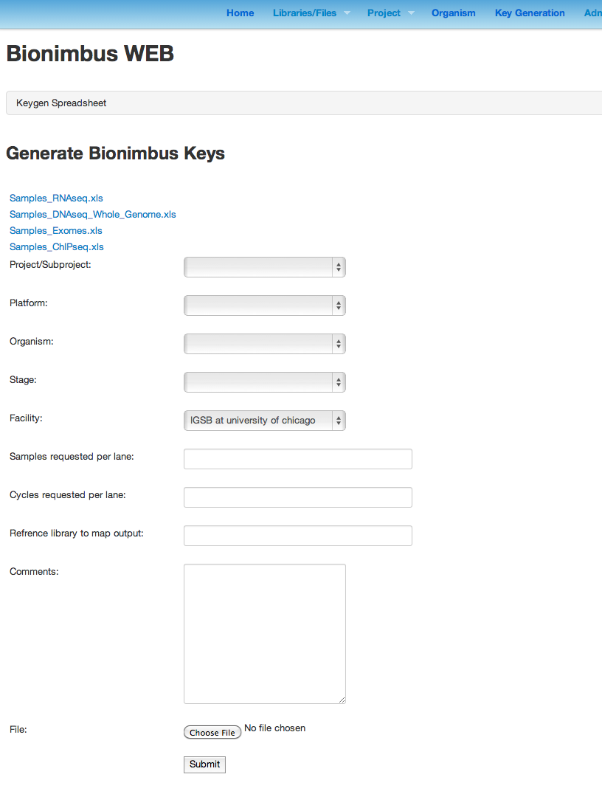
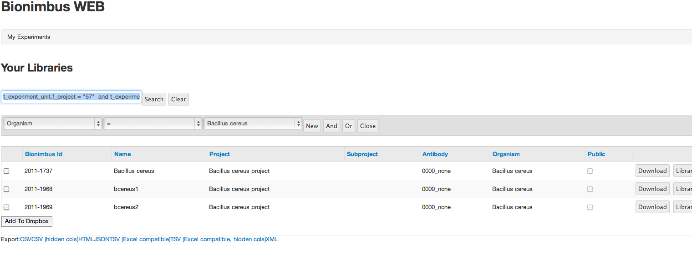
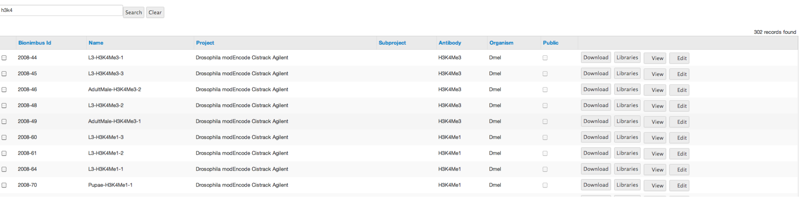
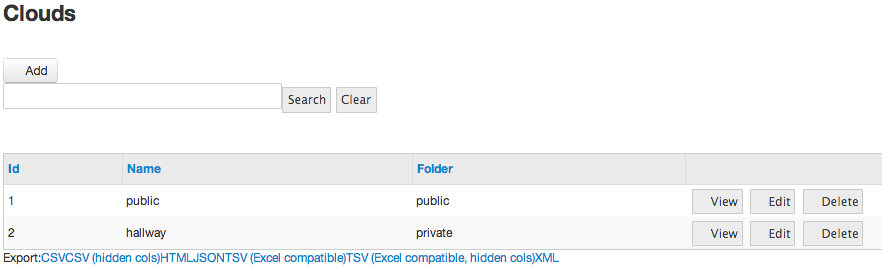
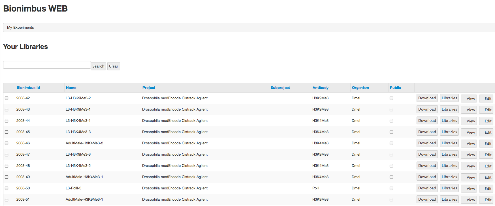
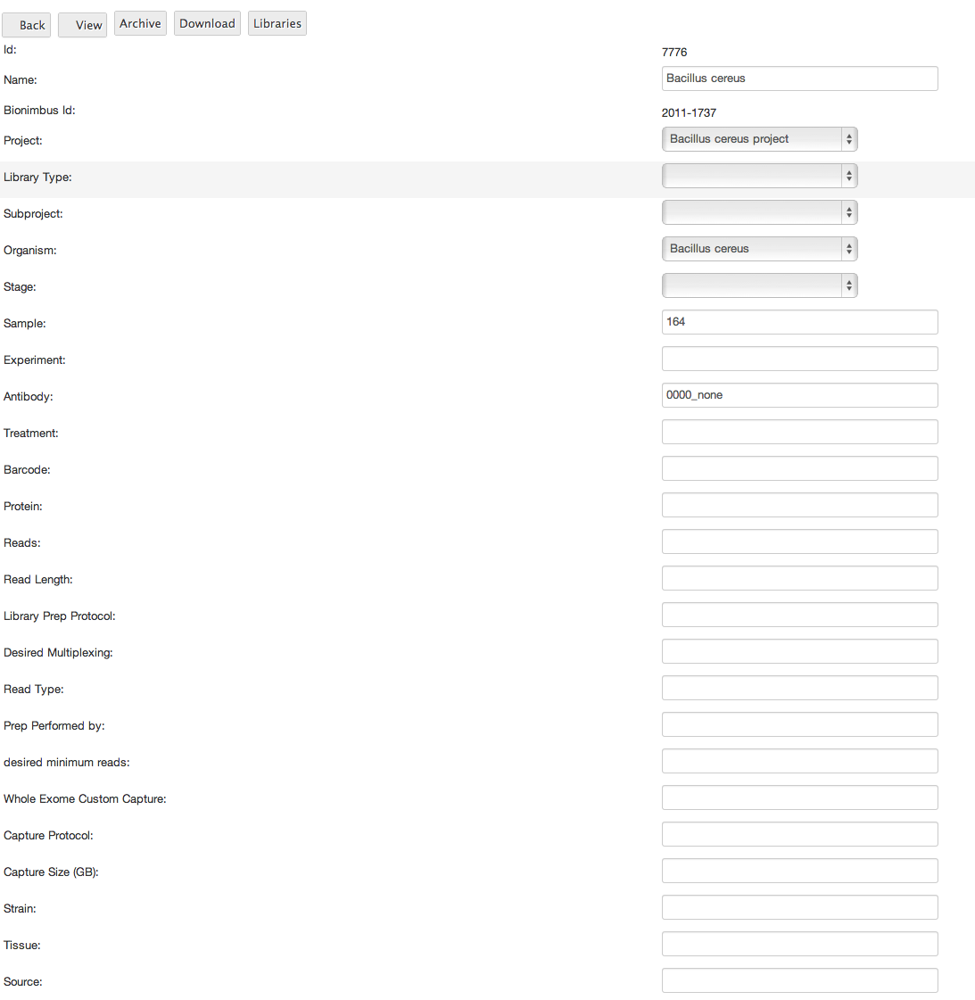
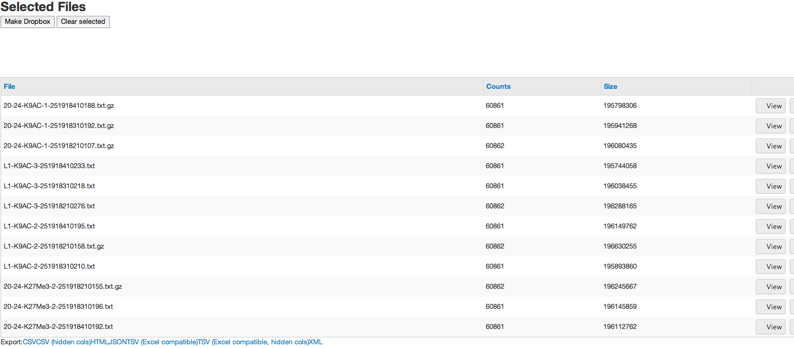
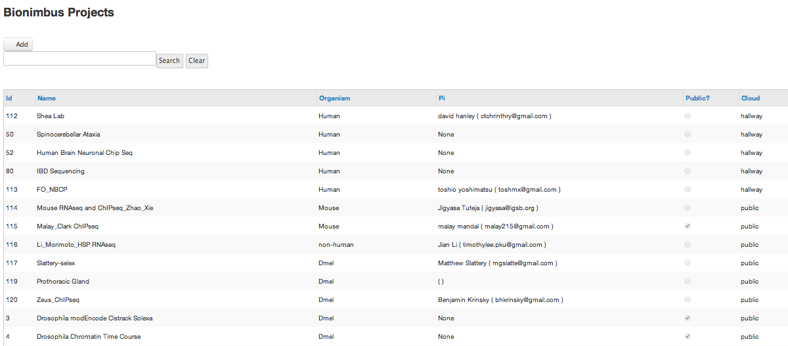

Bionimbus is a system for managing keys and data associated with bioinformatics datasets.
A dataset ( one or more files ) is associated with a key. A bionumbus key is the year the key was generated followed by the index. So the first key generated in 2013 would be 2013-1, the 1000th, 2013-1000.
Keys have a plethora of metadata associated with them, such as antibody, treatment, organism, name, etc. What metadata is associated and required is based on the type of data associated with the Key, be it CHIpSeq.
Keys have security and limited visibility. Every key is a member of a project, and users can see keys that are public, or in which they are a member of the project that contains the key.
If you navigate to the projects tab, you will see a list of the projects you have access to:

Scroll to the right, and you will see a libraries button, which will display the libraries associated with the project. You can also see all the libraries you have access to or a list of all the public libraries, via the “libraries” tab. If you do not have access to a project that contains the data you need, you need to contact an administrator to add you to the project. Please contact jhtuteja@uchicago.edu or dhanley@uchicago.edu and explain your connection to the project

You may have access to too many libraries to make scrolling through them practical. In this case, there is a sophisticated search function that allows you to find a set of libraries based off of any of the displayed metadata.
If you click the search text area, you are presented with a query building tool. You can simply enter a textual query if you want, for example:

For more sophisticated operations than looking for a simple string, you will want to use the query builder. Some fields, such as project and organism, cannot be searched with a simple text query. You can choose a part of a query, then populate the text box with it, then choose another part of a query, and whether you want to search it “and” or “or” what is in the text box. So you can build a query like this:
t_experiment_unit.f_project = "57" and t_experiment_unit.f_organism = "10"
And find the three records that match that.

The main view when looking at a library only displays a subset of the available metadata based on the type of the library. If you scroll to the right, you will have the option to view more detailed metadata, view the files, edit the metadata, or download the files:
Viewing:
If you click View you are presented with detailed metadata for the Library:

From here, or from the previous screen, if you are the administrator, or a project admin, you can select edit to edit the library's metadata:

From here, you can edit any of the library’s metadata except the Bionimbus key. You can even change the project, which may cause you to lose access to the library, but is important as a way to clean up miscategorized data.
To the left of the libraries are checkboxes. You can click one or more of these, then scroll to the bottom and click “add to dropbox.”
This creates a collection of files associated with those keys. You will be taken right to the collection:

You can go back to libraries and choose more libraries & files to add. Or, you can return to your dropbox by choosing “selected files” under “libraries”. You can scroll to the right and ‘delete’ items from the dropbox--it will not delete the files. There is no way to delete files or keys in the system
There will be more options in the future, such as pushing collections of files to specific clouds, processing files, but from here, you can create a dropbox with “make dropbox”
What that will do is create a short URL that you can use to download all the files in the collection. It is a mechanism to allow sets of files to be shared with collaborators, or even transferred to other systems using mechanisms like get or curl.
Key generation
One of the most important functions of the bionimbus system is the generation of keys. To generate keys, the user needs access to the project the keys are to be generated in. If the user cannot select the project from the key generation page, she needs to contact an administrator to add her to the project.
To generate keys, the user must download and fill in a gey generation template spreadsheet. What sheet you download will be determined by the type of library you will be generating, RNAseq, DNAseq ,ChIPseq, or Exome. Furthermore, several options, such as Platform, Organism, Stage, and Facility are present on the interface, so if you are generating keys for Various organisms and Stages, you will need to create key generation spreadsheets for each of these.

After filling this sheet in, you will proceed to a verification page that shows all your filled-in data plus the contents of your spreadsheet.